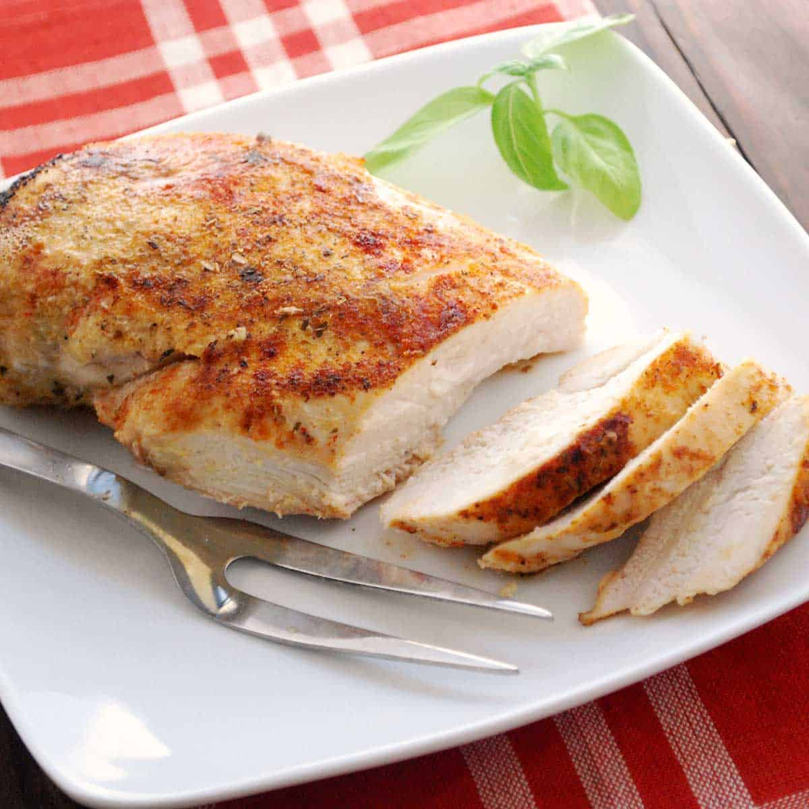

Simple Baked Chicken Breasts

A Recipe for:
Baked chicken that's tender, juicy, and perfect every time with this simple, 5-ingredient recipe for boneless, skinless chicken breasts.
Adding just a bit of chicken broth to those beautiful pan drippings creates a tasty pan sauce that adds extra flavor at the table.
Ingredients:
- Chicken Breasts
4 (5 ounce) Skinless, boneless chicken breast halves.
- Olive Oil
2 tablespoons olive oil
- Salt
½ teaspoon coarse sea salt, or to taste
- Creole Seasoning
1 pinch Creole seasoning (such as Tony Chachere's®), or more to taste
- Chricken Broth
1 tablespoon chicken broth, or more to taste
Directions:
- Preheat the oven to 400 degrees F (200 degrees C).
- Rub chicken breasts with olive oil and sprinkle both sides with salt and Creole seasoning.
Place chicken in a broiler pan.
- Bake in the preheated oven for 10 minutes.
Flip chicken and cook until no longer pink in the center and the juices run clear, about 15 minutes more.
An instant-read thermometer inserted into the center should read at least 165 degrees F (74 degrees C).
- Remove chicken to a plate.
- Pour chicken broth into the pan and scrape any browned bits off the bottom with a flat-edged wooden spatula.
Add more broth if needed to dislodge the browned bits, but not too much or it will be watery.
- To serve, drizzle the pan sauce over the chicken.
Back to Homepage